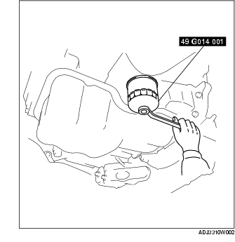

Oil filter replacement [ZY]
1. Remove the oil filter using the SST.

2. Use a clean rag to wipe off the mounting surface on the cylinder block.
3. Apply clean oil to a new O-ring of a new oil filter.
4. Remove the oil filter using the SST.
Tightening torque5. Refill the engine with the type and amount of engine oil specified in the table.
6. Start the engine and inspect for oil leakage.
7. Inspect the oil level. (See ENGINE OIL LEVEL INSPECTION [ZY].)